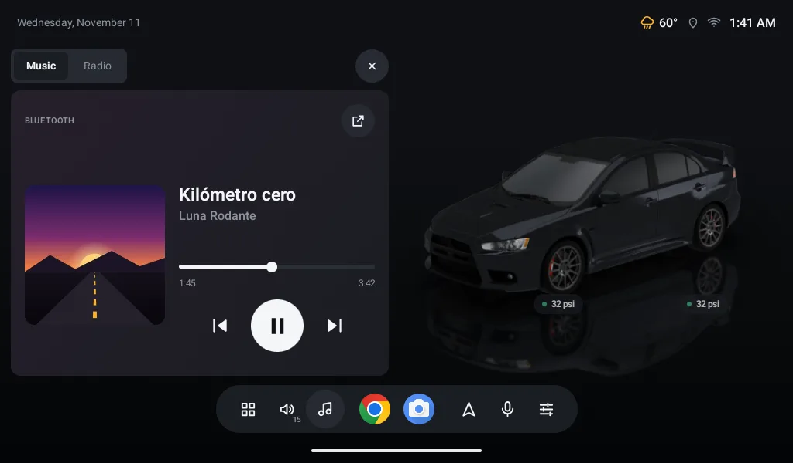
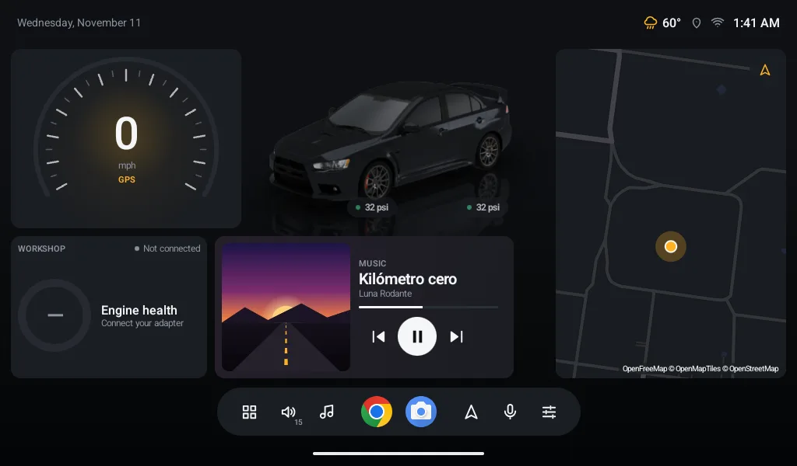

- LiteDash Connect
- Free
- Optional
- No ads
Your phone's music, in your car.
The optional phone app that shows what you're listening to in LiteDash, with album art and controls.
Android 7.0 or newer · your screen with LiteDash 1.4.130 or newer

LiteDash doesn't need it.
Everything in LiteDash works the same without it: your 3D car, the Workshop, tires, map, radio and your music over USB or Bluetooth. Connect only adds what your screen can't do on its own.
What's playing on your phone, on your home screen.
Many screens play over Bluetooth but can't tell what. Connect sends it from your phone, whatever brand your screen is.
- Song, artist and album art in the Music widget, with its progress.
- Control it from the screen: play, pause, next, previous and seek.
- With the app you use: Spotify, YouTube Music or whatever you have.
- Sound stays the same: it still plays over your car's Bluetooth, as always.

Your phone and your screen, no internet in between.
They talk over your phone's hotspot or your Wi‑Fi. Everything is encrypted and only with the screen you linked.
- No internet: your music never reaches any server.
- Always ready: they connect on their own when the screen turns on.
- You know how it's going: the app tells you if they're connected and over which network.
- Screen
- 11" screen
- LiteDash
- 1.4.130
- Network
- This phone's hotspot
- Music
- On the screen
Three steps, just once.
On your screen
Open LiteDash → Settings → Account. A QR code shows up there.
On your phone
Open Connect, create your free account and tap “Link my screen”.
Point at the code
Check that the 4‑digit number matches on both. Done.
To find each other, your screen must be on your phone's hotspot or the same Wi‑Fi.
What you already have.
An Android phone
Android 7.0 or newer, with a camera to read the code.
LiteDash on your screen
Version 1.4.130 or newer, on a screen with Wi‑Fi.
A free account
With Google or your email. You create it in the app.
Your hotspot or Wi‑Fi
A network between the two. No mobile data or internet needed.
Before you install it.
Do I need it?
No. LiteDash works fully without it. Connect is for convenience.
How much is it?
Nothing. No ads.
Why does it need an account?
To save your LiteDash and restore it if you change phones or screens. Today it only keeps your name, your email and which screen you linked. LiteDash on the screen never asks for an account.
Does my music go through the internet?
No. It goes straight from your phone to your screen, encrypted. It isn't stored anywhere.
Why does it need notification access?
It's the permission Android uses to let an app see what's playing in other apps. We only read the song, never your messages.
Does it carry the sound?
No. Sound still plays over your car's Bluetooth. Connect carries the title, art and buttons.
Does it work with Android Auto?
You can have both. Connect doesn't touch your Bluetooth or disconnect Android Auto. They're for different moments: while you use Android Auto, it already shows your music; when you go back to LiteDash, Connect reconnects on its own. Note: wireless Android Auto and the hotspot use the same phone Wi‑Fi, and many phones can't do both. Over USB it's fine.
iPhone?
Not for now. iPhone doesn't let an app see what's playing in other apps.
Battery or data?
Little battery: it only works while they're connected. Music doesn't use your data; it goes over the network between the two. If your screen uses the internet through your hotspot (map, weather), that does, as always.
Do I need the internet?
Only to create your account. The link goes over your hotspot or Wi‑Fi, no internet.
What if they don't connect?
Check that your hotspot is on and the screen is connected to it. LiteDash tries again on its own every minute.
What's the “Link with your car” notification?
It keeps the link going with the app closed. It goes away if you unlink.
Can I link more than one screen?
One phone per screen. To switch, unlink and scan again.
Is it open source, like LiteDash?
LiteDash is. Connect is a separate app and its code isn't public; how the two talk is in LiteDash's open source code.
Try it today.
Install it on your phone, link it with your screen and enjoy your music with its album art.
Free · Android 7.0 or newer · your screen with LiteDash 1.4.130 or newer